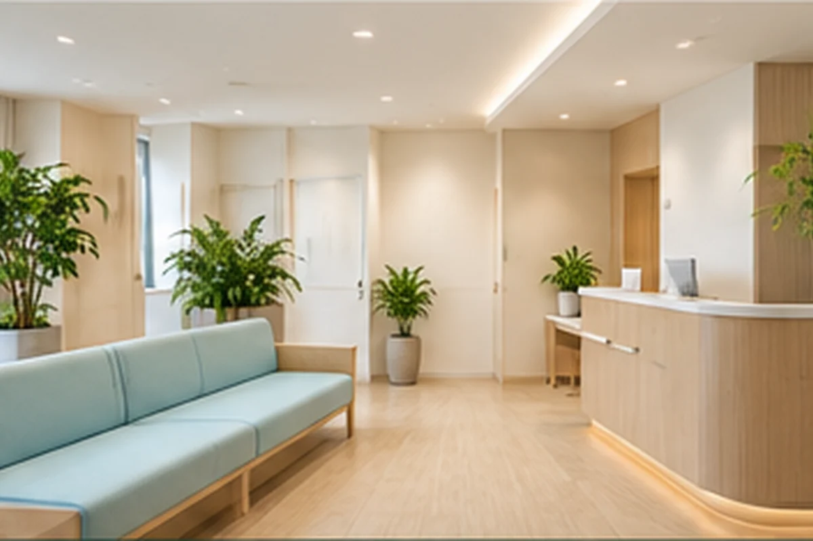
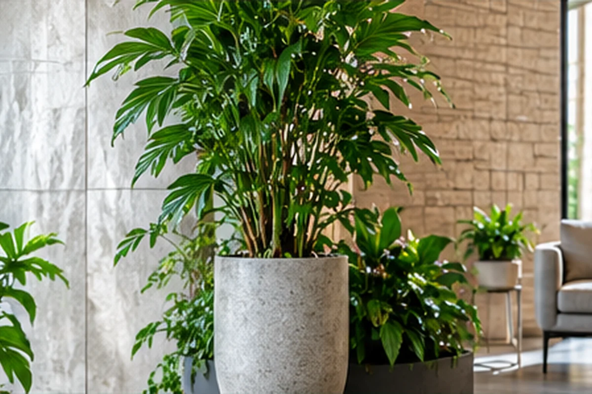
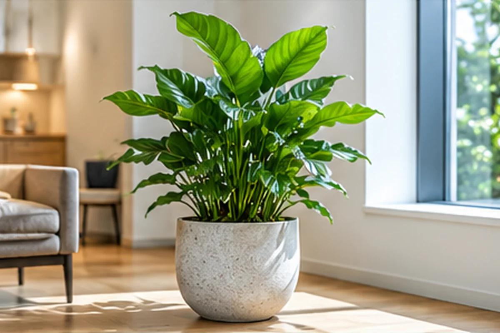
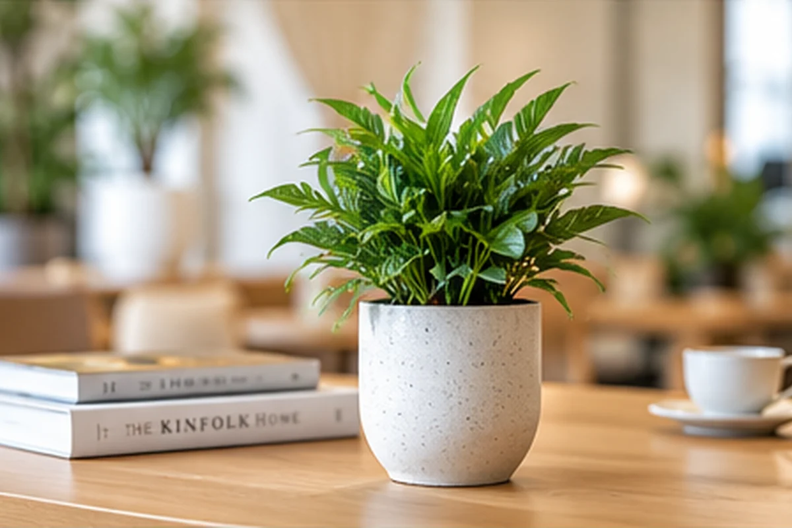
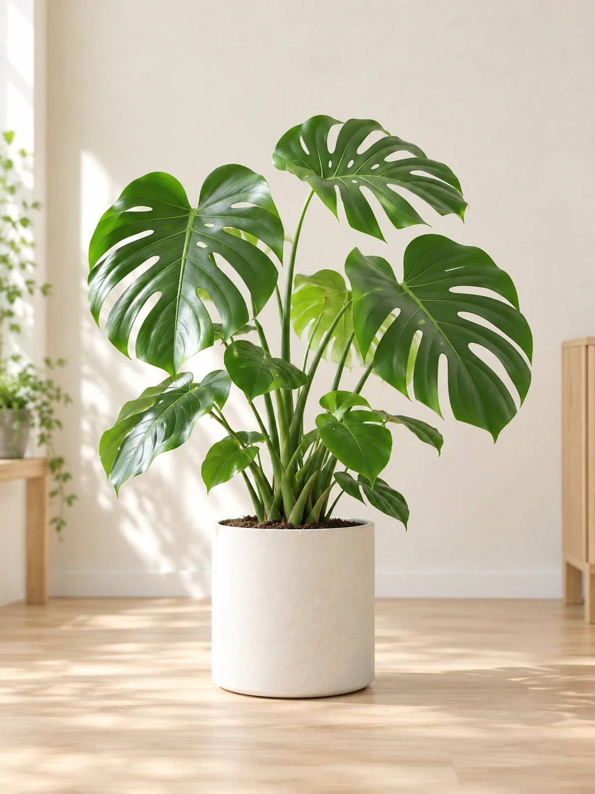
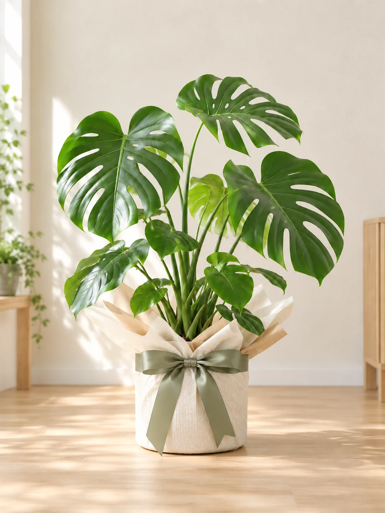
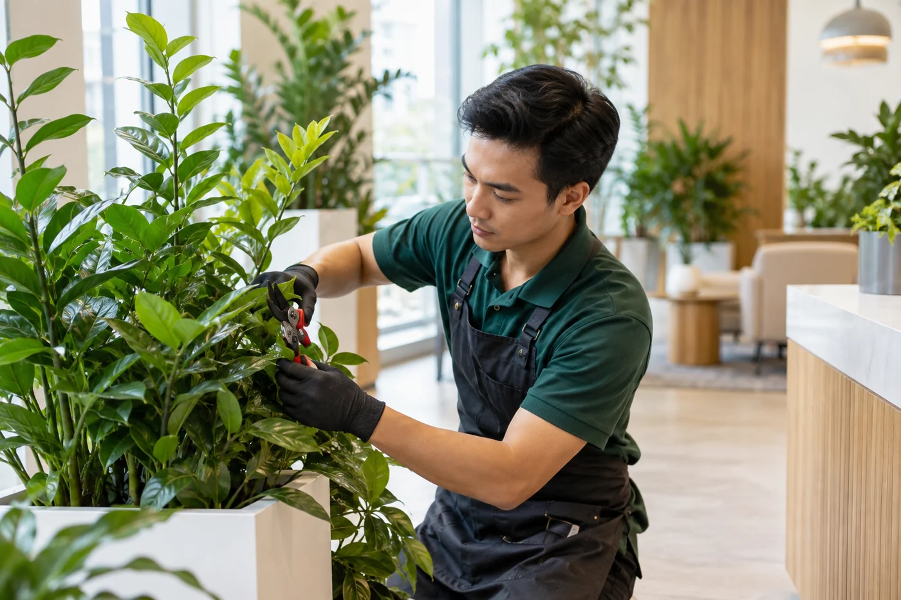
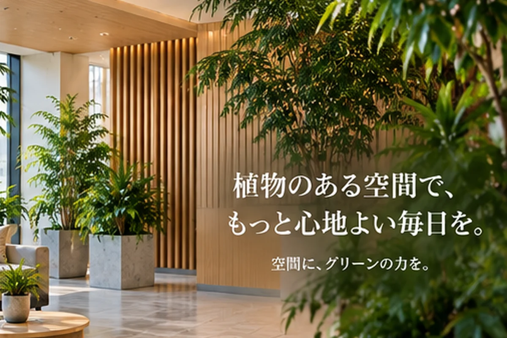

LOCAL粕屋町を拠点に対応
SELECT植物・鉢・配置を提案
CARE設置後も定期メンテナンス
SHOP購入機能はON/OFF可能

SPACE COORDINATIONGREEN MAKES A DIFFERENCE
植物を置くだけでなく、空間の印象まで考える。
受付、待合、執務スペース、店舗の入口。人が過ごす場所に合う植物と鉢を選び、導線や管理のしやすさまで含めてご提案します。
受付・入口第一印象を整える
オフィス働く空間を心地よく
店舗・サロン内装に合う植物を
医療・福祉安全な動線にも配慮
PLANTS & POTS
見て、比べて、好きなグリーンを見つける。
レンタルの相談でも、購入でも。植物のサイズや鉢の雰囲気を見ながら、空間に合う組み合わせを考えられます。

L SIZE空間の主役になる大型グリーンエントランス・オフィス・広い待合に

M SIZE置きやすい中型サイズ受付・店舗・執務スペースに

S SIZE小さな場所にも緑をカウンター・デスク周辺に
※本部カタログは商品選びの参考です。粕屋店での取扱い・在庫・提供条件はご相談時にご確認ください。
HEADQUARTERS CATALOG EXAMPLES商品名まで見えると、選ぶ楽しさが増える。本部カタログ掲載例。粕屋店での取扱い・在庫・提供条件は個別にご確認ください。
PLANTS / SHOP CATALOG植物・鉢を、見た目から選べる。商品カードはデータで管理し、公開ON/OFF・レンタル相談・購入の表示を切り替えられる構造です。
ONLINE SHOPを見る →RENTAL OR PURCHASE
借りる。買う。使い方に合わせて選べます。
管理まで任せたいならレンタル。自分の植物として楽しみたいなら購入。迷っている段階から相談できます。
管理までまとめて任せたい
- 植物選びから相談したい
- 定期的に状態を見てほしい
- 水やり・剪定の負担を減らしたい
- 空間に合わせて継続相談したい
気に入った植物を購入したい
- 自分の植物として育てたい
- 植物と鉢をセットで選びたい
- ギフト用途も検討したい
- オンラインで商品を見たい
COMPAREレンタルと購入、4つの違い。
比較項目レンタル購入
初期費用
月額利用を基本に、設置条件をお見積り。
商品・鉢などを購入時にお支払い。
日々の管理
契約内容に応じて定期メンテナンス。
基本は購入後にご自身で管理。
状態が悪くなった時
状態確認・手入れ・交換条件を契約内容に沿ってご案内。
購入条件・保証内容に沿って対応。
空間の変化・入替
契約内容に応じて配置や植物の変更を相談。
必要に応じて追加購入・入替。
ONLINE SHOP
レンタルだけじゃない。植物を「買う」入口も。
観葉植物・鉢・ギフトなどをオンラインで選べるSHOP機能。店舗運用に合わせて機能そのものをON/OFFできます。
植物＋鉢カートギフトオンライン決済

PLANT + POT植物と鉢をセットで
BUSINESSオフィス・開店祝いにもSCENES
置く場所が変われば、グリーンの役割も変わる。


AFTER INSTALLATIONMAINTENANCE
設置して終わりではなく、その後の状態まで見る。
定期訪問では、ご契約内容に応じて給水・葉の清掃・剪定・枯葉除去・状態確認などを行います。
START IN 5 STEPS
問い合わせから開始まで、先に流れが分かる。
本部の基本的な案内フローをもとに、初めての方でも次に何をするか分かる形に整理しています。
開始後定期訪問 → メンテナンス → 状態チェック → 報告・相談ご利用の流れを詳しく見る →
PRICE GUIDE
まずはサイズごとの目安から。
グリーン・ポケット本部カタログ掲載のレンタル基本料金を目安として掲載しています。設置内容や植物・鉢・訪問条件に合わせてお見積りします。
見積りを相談する料金・見積りで確認する内容
植物鉢・鉢カバー搬入・設置定期訪問給水剪定・葉の清掃状態チェック交換・追加条件
料金に含まれる内容と対象範囲は、お見積りで分かりやすく明示します。GREEN POCKET NETWORK
地域店の相談力に、本部ネットワークの基盤を。
グリーン・ポケット本部が公開しているサービス基盤・商品開発・スタッフ認定の情報を、粕屋店の安心材料として短くまとめています。
FUKUOKA KASUYA SHOP
地域で、顔の見える相談窓口に。
店舗責任者西津 佳宏 店長
福岡県糟屋郡粕屋町を拠点に、植物のある快適な空間づくりをお手伝いします。植物の選定から設置後の管理まで、相談しやすい地域店舗を目指します。
ADDRESS福岡県糟屋郡粕屋町原町4-3-5
八昭ビル1階
八昭ビル1階
HOURS09:00〜17:30
CLOSED土日祝日・GW・年末年始
FAX092-719-0338

LINE PHOTO CONSULTATION
「この場所に置ける？」を、写真から相談。
植物名や鉢数が分からなくても大丈夫です。設置したい場所の写真と、希望する雰囲気や時期を送るところから始められます。
- 1場所を撮影受付・入口・執務室など
- 2LINE / WEBで相談希望や悩みを簡単に
- 3内容を確認必要に応じて現地確認へ
LINE + DPRO GREEN
ホームページの先まで、サービスをつなげる。
相談を受けて終わりではなく、顧客・設置場所、訪問予定、作業内容、写真履歴まで一つの流れとして管理できます。
FAQ
相談前によくある質問。
植物や鉢数が決まっていなくても相談できますか？
はい。設置場所、希望する雰囲気、時期など、分かる範囲から相談できます。
レンタルと購入で迷っています。
管理方法や利用目的を確認しながら、どちらが合うか整理できます。SHOP機能がONの場合は購入商品も確認できます。
定期メンテナンスでは何をしますか？
契約内容に応じて、給水、葉の清掃、剪定、枯葉除去、状態確認など必要な作業を行います。
植物の状態が悪くなった場合はどうなりますか？
状態を確認し、必要な手入れや交換について相談します。交換条件は正式な契約内容に基づいてご案内します。
LINEから写真を送って相談できますか？
LINEから設置場所の写真を送り、置きたい場所や雰囲気、料金の目安について相談できます。

START WITH A PHOTO
植物のある空間を、写真1枚から一緒に。
設置場所・希望する雰囲気・導入したい時期。まずは分かることだけで大丈夫です。